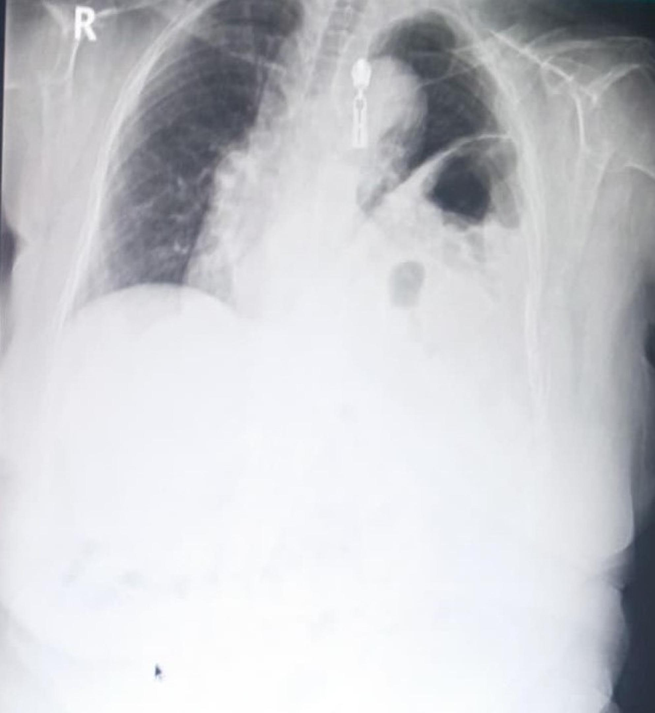
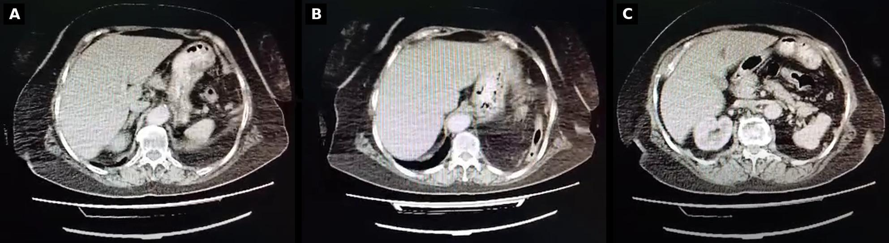

045 — Thành ngực (dấu ngoài màng phổi) & thoát vị hoành / Extrapleural sign & Diaphragmatic hernia
Tags: pattern:ngoai-mang-phoi vung:thanh-nguc
Mức chắc chắn (certainty): tổng hợp y văn (literature synthesis) — nhóm tự biên từ y văn mở, chưa gắn ca nguyên văn đơn lẻ.
1. Tổng quan — ngoài màng phổi vs trong phổi + Bochdalek người lớn
- Dấu ngoài màng phổi (extrapleural sign): tổn thương ngoài màng phổi đè vào phổi → bờ trong lồi đều + góc tù với thành ngực (u thành ngực, máu tụ ngoài màng, mủ ngoài màng).
- Thoát vị Bochdalek người lớn: lỗ sau-bên hoành bẩm sinh, 0,17% CT bụng, tuổi trung bình 60+; tạng (đại tràng ngang, mạc nối) lên ngực trái → khó thở gắng sức, dễ nhầm viêm/tràn dịch.
- TẠI SAO CT quyết định: thấy khuyết hoành + tạng liên tục qua lỗ + xẹp ép đáy cùng bên; X-quang chỉ gợi ý (mức khí-dịch + vòm hoành biến dạng).
2. Gamut khối thành ngực + mức khí-dịch đáy trái
- Máu/mủ ngoài màng sau chấn thương: lồi đều góc tù + gãy xương sườn kề — ổn định, theo dõi.
- U thành ngực (xương/mô mềm): hủy xương + phản ứng màng xương + mô mềm — sinh thiết.
- Bochdalek: mức khí-dịch + tạng liên tục qua hoành sau-bên trái + xẹp ép — mổ (kẹt/nghẹt nguy hiểm).
- Thoát vị khe (hiatal): qua khe thực quản, người già, ợ nóng — khác Bochdalek sau-bên.
3. Bảng so sánh
| Thực thể (entity) | Hình ảnh điển hình | Chốt vào (rule-in) | Chốt loại (rule-out) | Gợi ý xác nhận |
|---|---|---|---|---|
| Bochdalek người lớn | Mức khí-dịch + tạng qua lỗ sau-bên + xẹp ép, túi 15×7 cm | Tạng liên tục qua khuyết hoành CT | Không khuyết hoành → tràn dịch/viêm phổi | CT cản quang, mổ (nội soi/lồng ngực) |
| Máu ngoài màng | Lồi đều góc tù + gãy xương kề + chấn thương | Góc tù + chấn thương + ổn định | Góc nhọn + vượt rãnh → trong phổi | Theo dõi, dẫn lưu nếu ép |
| U thành ngực | Hủy xương + mô mềm + góc tù | Hủy xương/màng xương | Không hủy xương → máu/mủ cũ | Sinh thiết, MRI lan tỏa |
| Thoát vị khe | Qua khe thực quản + ợ nóng + người già | Vị trí khe + triệu chứng trào ngược | Sau-bên + tạng lớn → Bochdalek | Nội soi, điều trị trào ngược |
4. Protocol
- CT cản quang ngực-bụng: khuyết hoành + tạng + xẹp ép + thiếu máu tạng (kẹt).
- Bochdalek có triệu chứng/kẹt: mổ (nội soi ổ bụng/thoracoscopy tùy dính); không triệu chứng vẫn cân nhắc mổ dự phòng.
- X-quang: mức khí-dịch + vòm hoành biến dạng = gọi CT ngay, đừng chọc "tràn dịch".
5. Cạm bẫy
- Chọc nhầm quai ruột trong ngực tưởng tràn dịch — CT trước mọi chọc đáy trái bất thường.
- Bóng dạ dày cao giả thoát vị — uống cản quang xác nhận liên tục.
- Xẹp ép đáy giả viêm — tìm tạng qua hoành, đừng kháng sinh mù.
6. Tự lượng giá — Blind Quiz
Ca 1 — Nữ 65 tuổi, khó thở gắng sức 2 tháng. Nhìn X-quang, gọi tên trước.

- Hỏi: mức khí-dịch + vòm hoành trái biến dạng gợi gì? Bước tiếp theo (chọc hay CT)?
Bấm để hiện đáp án
- Thoát vị Bochdalek trái: mức khí-dịch + vòm hoành biến dạng — CT cản quang ngay, cấm chọc mù.
- Đối chiếu CT (nguyên bản, không cắt ghép do ND):

- Túi 15×7 cm + đại tràng ngang trong ngực + xẹp ép đáy trái → mổ (nội soi chuyển lồng ngực do dính kẹt).
- Nguồn: Aldakak et al., J Cardiothorac Surg 2026, CC BY-NC-ND 4.0 (giữ nguyên bản).
Ca 2 — Chấn thương + khối lồi đều góc tù thành ngực + gãy xương kề: trong hay ngoài phổi? Xử trí? (Quy tắc mục 3.)
Bấm để hiện đáp án
- Ngoài màng phổi (máu tụ): góc tù + chấn thương — theo dõi, dẫn lưu nếu ép hô hấp.
Bài liên quan chéo
- 001 – Tổng quan hệ Ngực
- 040 – Tràn dịch màng phổi (đừng chọc nhầm)
- 080 – Chấn thương ngực (đã có) (vỡ hoành chấn thương)
Không dùng để chẩn đoán độc lập khi chưa có người hướng dẫn.